Code Club S02E10: An introduction to ggpubr
Learning objectives
- Understand what is a ggplot extension
- Define what is ggpubr
- Recognize the advantages and drawback of ggpubr
- Create a density plot with ggpubr
- Add statistical results to density plots
Understand what is a ggplot extension
A ggplot extension is a set of functions that helps in the automation of a given task. In the case of ggplot extensions, there are 102 registered extensions up today.
ggplot’s extensions are developed based on the core of ggplot and help to create a customized plot with certain features such as animation, specific color scales, or to produce a ready to publish figure.
The ggplot extensions website has an overview of the available extensions:
Define what is ggpubr
ggpubr is an R package that produces ggplot-based plots with a more elegant aesthetic. Although ggpubr has default figures themes, plots usually require some formatting before sending them for publication.
Getting everything ready
First, we can take a look at the data that we are going to use. In this case, since we are already familiar with palmerpenguins dataset, we are going to continue using this data.
To remember the data structure, we can use the glimpse function.
If you do not have installed the palmergenguins library, you can do it with this line. If you already have it, skip this line.
install.packages("palmerpenguins")To install the ggpubr package for the first time, you can use this command.
install.packages("ggpubr")Loading all required packages
A good programming style is to load all necessary packages at the very beginning of the script.
library(tidyverse) # To load all packages including in the tidyverse
library(palmerpenguins) # Load the example data
library(ggpubr) # Create ready to publish figuresRemembering the palmer penguins data

glimpse(penguins)
#> Rows: 344
#> Columns: 8
#> $ species <fct> Adelie, Adelie, Adelie, Adelie, Adelie, Adelie, Adel…
#> $ island <fct> Torgersen, Torgersen, Torgersen, Torgersen, Torgerse…
#> $ bill_length_mm <dbl> 39.1, 39.5, 40.3, NA, 36.7, 39.3, 38.9, 39.2, 34.1, …
#> $ bill_depth_mm <dbl> 18.7, 17.4, 18.0, NA, 19.3, 20.6, 17.8, 19.6, 18.1, …
#> $ flipper_length_mm <int> 181, 186, 195, NA, 193, 190, 181, 195, 193, 190, 186…
#> $ body_mass_g <int> 3750, 3800, 3250, NA, 3450, 3650, 3625, 4675, 3475, …
#> $ sex <fct> male, female, female, NA, female, male, female, male…
#> $ year <int> 2007, 2007, 2007, 2007, 2007, 2007, 2007, 2007, 2007…For the downstream example, we are going to contrast the bill depth of the female vs male penguins of the Adelie species found on the island of Biscoe.
Therefore, we need to filter based on species == Adelie and island == Biscoe.
# Filter by species and island
penguins_filtered <- penguins %>%
filter(species == "Adelie", island == "Biscoe")
# Count the occurence of the factors levels of sex, species and island
penguins_filtered %>% count(sex, species, island)
#> # A tibble: 2 × 4
#> sex species island n
#> <fct> <fct> <fct> <int>
#> 1 female Adelie Biscoe 22
#> 2 male Adelie Biscoe 22Creating the plot with ggplot
One of the main differences between ggplot and ggpubr is the syntax to create the base plot. In the case of ggplot, it is a layer based syntax, while in ggpubr, the syntax is embedded in a single function.
ggplot(penguins_filtered,
aes(x = sex, y = bill_depth_mm, fill = sex)) +
geom_boxplot()
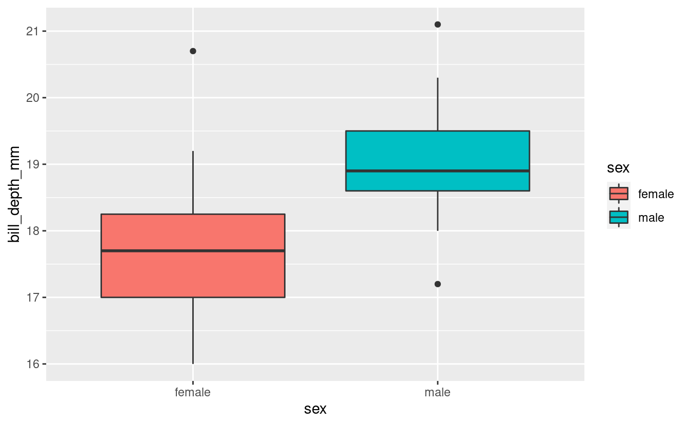
Now, since ggpubr has its own built-in geoms, we can use the ggboxplot() function:
base_plot <- ggboxplot(data = penguins_filtered,
x = "sex",
y = "bill_depth_mm",
fill = "sex")
base_plot
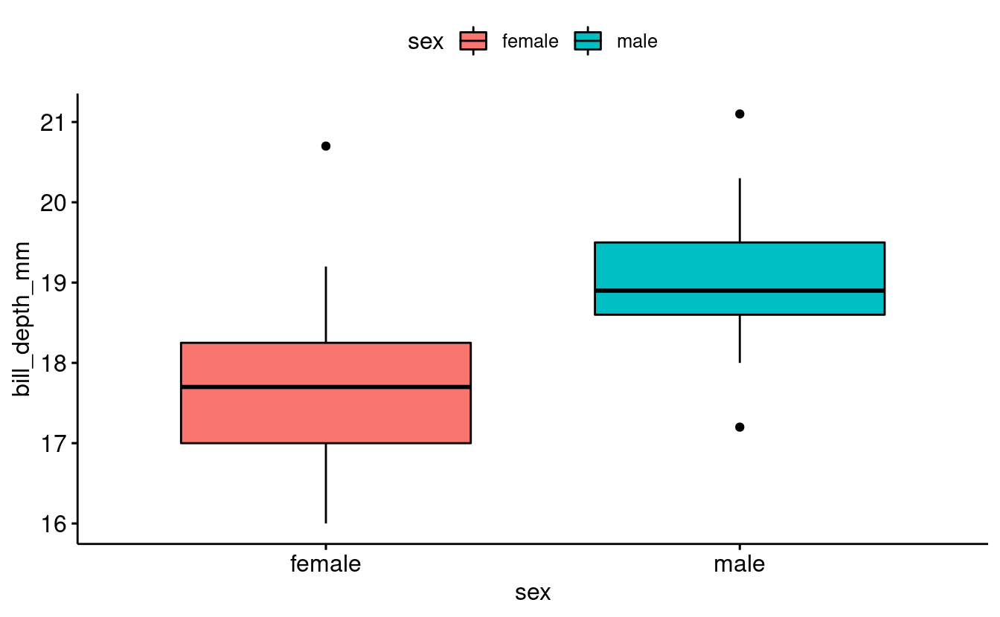
Since ggpubr creates plots based on ggplot syntax, you can treat these plots as another ggplot figure and use the same functions that you would use to format base ggplot plots.
base_plot <- ggboxplot(data = penguins_filtered,
x = "sex",
y = "bill_depth_mm",
fill = "sex") +
labs(title = "Comparison between Adelie penguins by sex",
fill = "Sex:",
x = "Sex",
y = "Bill depth (mm)")
base_plot
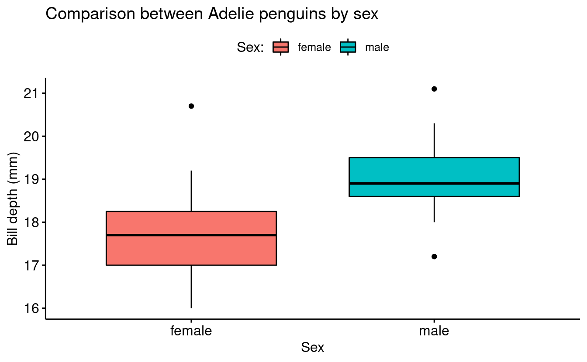
Add statistical results to the density plot
When hypotheses testing is brought to the table, we need to consider which type of stats we can and cannot apply to our data. Briefly, if our data fits the assumptions of being normally distributed and having variance homogeneity, we can apply parametric tests. On the other hand, if our data does not fit the assumptions, we need to apply a nonparametric test to the data.
| Comparison | Parametric | Nonparametric |
|---|---|---|
| 2 groups | t-test | Wilcoxon test |
| >2 groups | one-way anova | Krustal-Wallis test |
Checking assumptions
If we would like to conduct a hypotheses test, we need first to check assumptions (homogeneity of variance and and normality):
bartlett.test(bill_depth_mm ~ sex, data = penguins_filtered)
#>
#> Bartlett test of homogeneity of variances
#>
#> data: bill_depth_mm by sex
#> Bartlett's K-squared = 0.94576, df = 1, p-value = 0.3308Exploring the stat_compare_means() function
We can use the function stat_compare_means() to annotate the plot with the results of a statistical test comparing group means:
base_plot +
stat_compare_means()
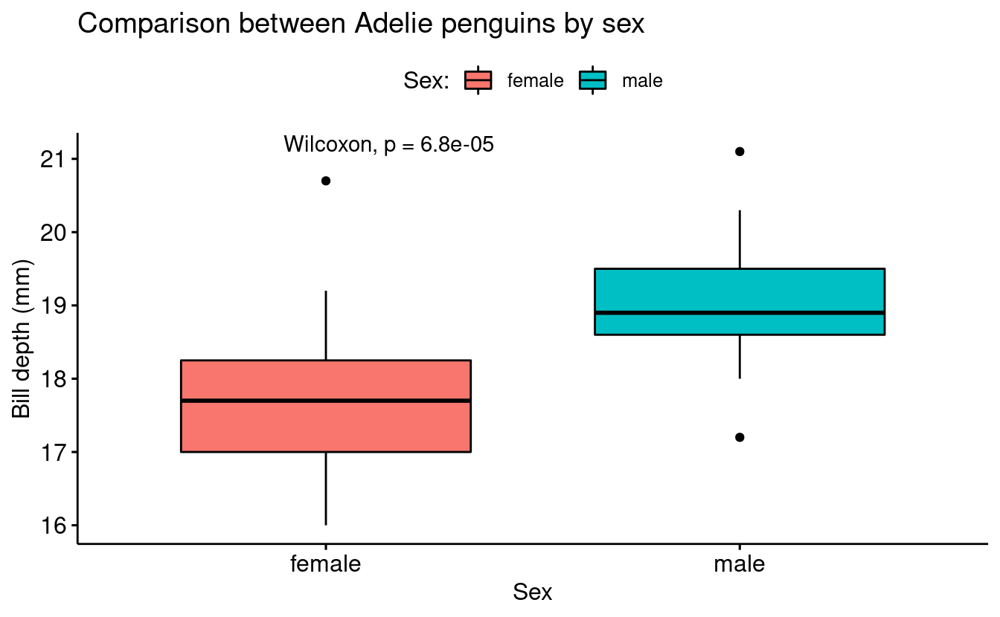
In order to be 100% sure about the computed p-value, we can compute the Wilcoxon test in the console:
wilcox.test(bill_depth_mm ~ sex, data = penguins_filtered)
#>
#> Wilcoxon rank sum test with continuity correction
#>
#> data: bill_depth_mm by sex
#> W = 72, p-value = 6.79e-05
#> alternative hypothesis: true location shift is not equal to 0Using ggplot to recreate the plot
Above, we created the base plot using ggpubr syntax, but we don’t need to do this. The following code would create a very similar plot using ggplot syntax and then only adding the stat_compare_means() at the end:
ggplot(penguins_filtered,
aes(sex, bill_depth_mm, fill = sex)) +
geom_boxplot() +
theme_bw() +
stat_compare_means()
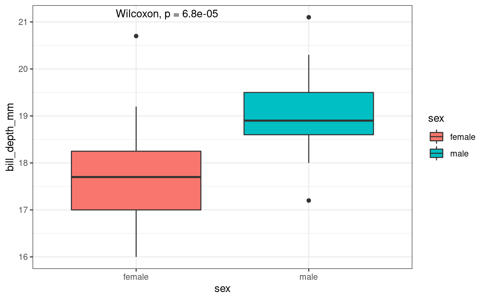
Breakout Rooms I (10 min)
Exercise 1
-
Filter the penguins data in order to have only the observations (rows) from the Chinstrap species from Dream island.
-
Create a boxplot using the ggpubr package or using base ggplot.
-
Use stat_compare_means() function to add a p-value.
Hints (click here)
- Use the
filter()function to filter rows - Filter using
species == Chinstrapandisland == Dream - If you want to use the ggpubr package to create the boxplot, use the
ggboxplot()function.
Solution (click here)
# Using ggpubr
# Filter by species and island
penguins_exc1 <- penguins %>%
filter(species == "Chinstrap", island == "Dream")
# Create the plot
exc1_plot <- ggboxplot(data = penguins_exc1,
x = "sex",
y = "bill_depth_mm",
fill = "sex") +
stat_compare_means()
# Show the plot
exc1_plot
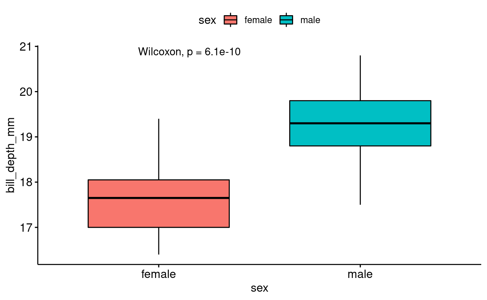
# Using ggplot only
# Filter by species and island
penguins_exc1 <- penguins %>%
filter(species == "Chinstrap", island == "Dream")
# Create the plot
exc1_plot_ggplot <- ggplot(penguins_exc1,
aes(sex, bill_depth_mm, fill = sex)) +
geom_boxplot() +
stat_compare_means() +
theme_bw()
# Show the plot
exc1_plot_ggplot
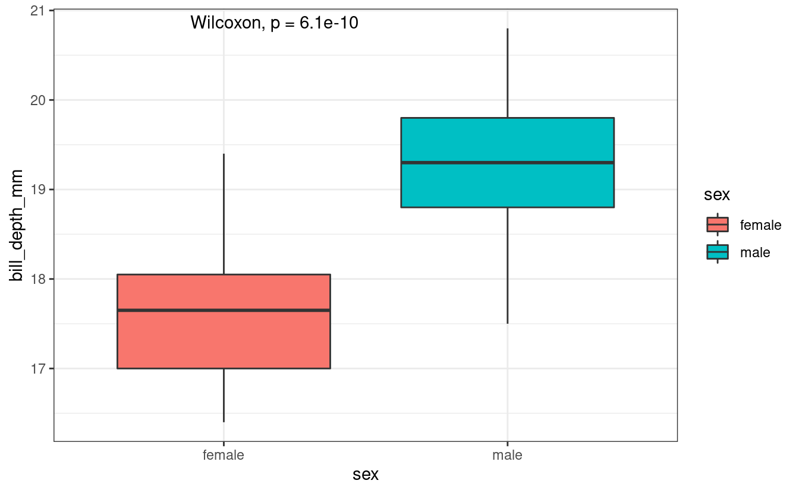
Multiple group comparison within a variable
In many experiments we can have multiple groups in a single variable. For example, within a variable nutrient concentration we can have multiple nutrient concentration levels such as 10%, 20%, 30% and so on.
In the case of the penguins data we can find this layout if we need to compare the males bill depth between species. Only for teaching purposes, we are not going to consider any difference by island.
penguins_male <- penguins %>%
filter(sex == "male")
penguins_male %>%
count(species, sex)
#> # A tibble: 3 × 3
#> species sex n
#> <fct> <fct> <int>
#> 1 Adelie male 73
#> 2 Chinstrap male 34
#> 3 Gentoo male 61penguins_male_plot <- ggboxplot(penguins_male,
x = "species",
y = "bill_depth_mm",
color = "species")
penguins_male_plot
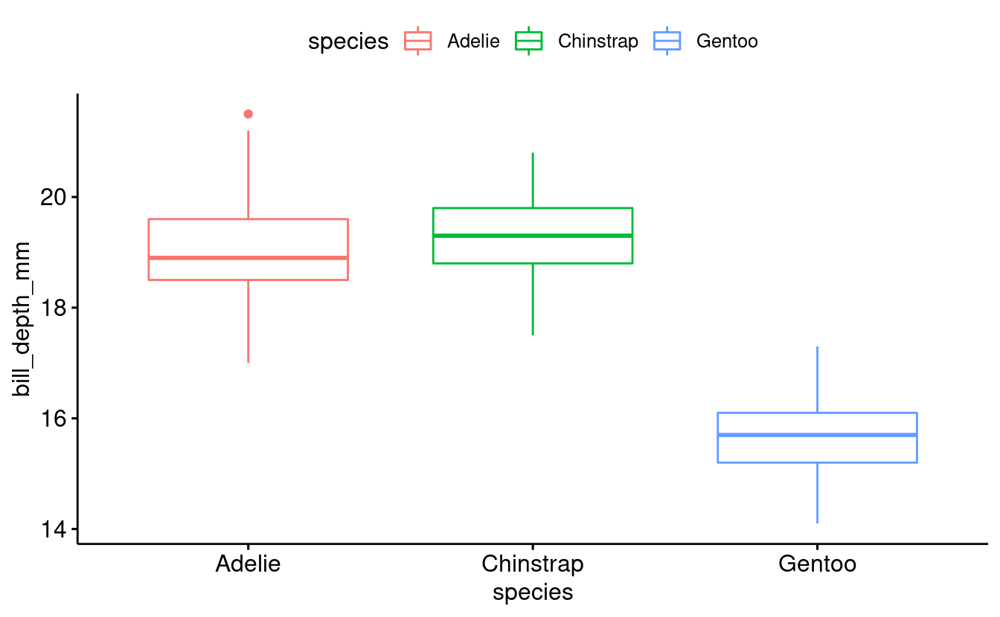
Like before, we can use the function stat_compare_means to add a p-value for an overall comparison between groups:
penguins_male_plot +
stat_compare_means()
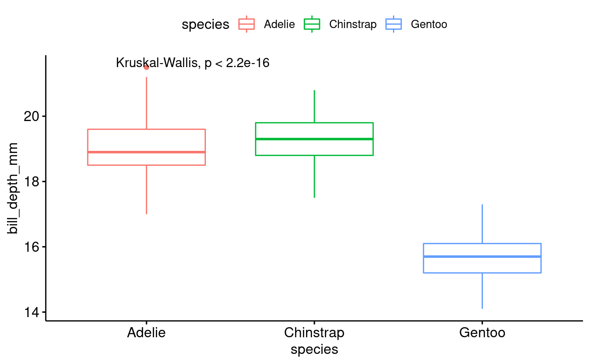
However, we may also be interested in getting a p-value for the different pairwise comparisons between groups. For instance, does the bill depth of Chinstrap penguins differ significantly from that in Gentoo penguins?
To do this, we can pass a list to that the stat_compare_means function. A list is a flexible, hierarchical R data structure. Here, we will use a list to store multiple vectors, each of which contains a pairwise comparison of interest:
comparison_list <- list(c("Adelie", "Chinstrap"),
c("Chinstrap", "Gentoo"),
c("Adelie", "Gentoo"))
penguins_male_plot +
stat_compare_means(comparisons = comparison_list) +
stat_compare_means(label.y = 25)
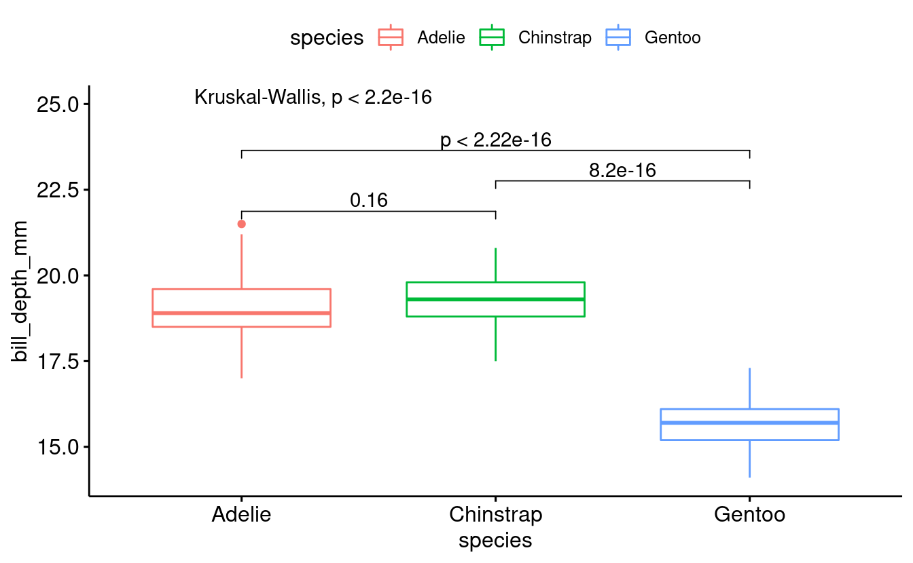
Breakout Rooms II (10 min)
Exercise 2
-
Filter the penguins data in order to have only the observations (rows) from female penguins.
-
Create a boxplot using the ggpubr package.
-
Add the multiple group comparison
-
Add pairwise comparisons between all groups combinations
Hints (click here)
-
Use the
filter()function to select desired rows -
Filter by
sex == "female" -
Use
ggboxplot()function for the base plot -
Use the
stat_compare_means()function for multiple group comparison -
Use the
comparisonargument to add pairwise comparison
Solution (click here)
# Filtering by sex
penguins_exc2 <- penguins %>%
# Filter by species and island
filter(sex == "female")
# Creating the base plot
exc2_plot <- ggboxplot(data = penguins_exc2,
x = "species",
y = "bill_depth_mm",
fill = "species")
# Adding the multiple group comparison
exc2_plot <- exc2_plot
# Creating the pairwise comparison
exc2_comparison <- list(c("Adelie", "Chinstrap"),
c("Chinstrap", "Gentoo"),
c("Adelie", "Gentoo"))
exc2_plot <- exc2_plot +
stat_compare_means(comparisons = comparison_list) +
stat_compare_means(label.y = 25)
exc2_plot
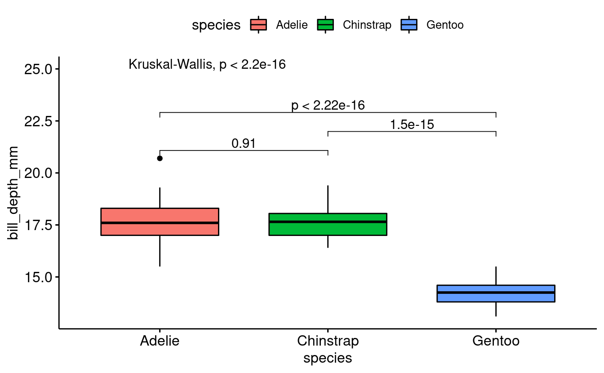